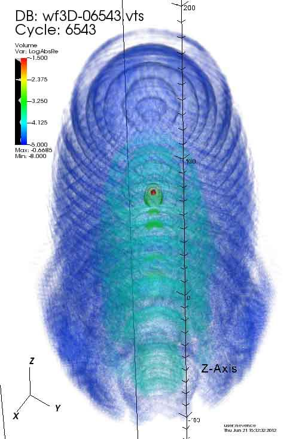
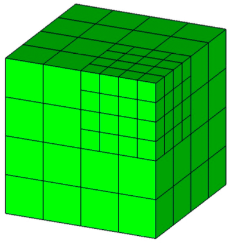
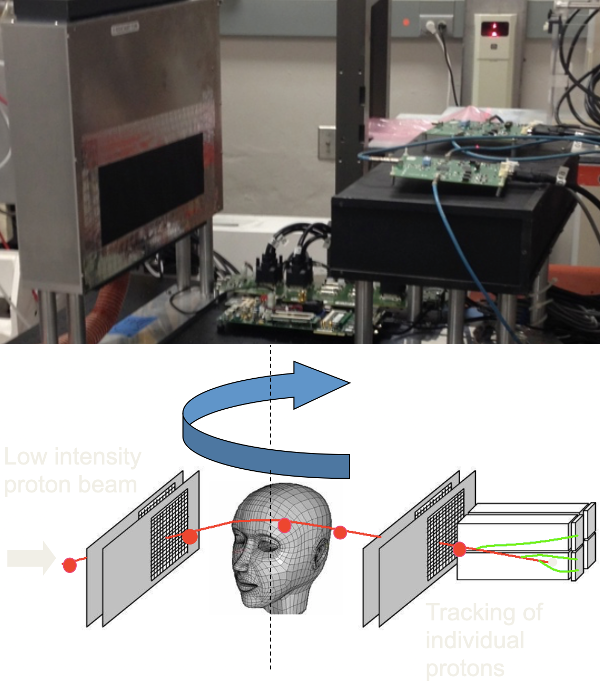
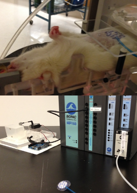

Research
This page highlights the technology of my academic projects. For an introduction to the science, follow the links to learn more about the project details.
Laser-atom interaction
In graduate school I studied laser-atom interactions using High Performance Computing at Oak Ridge National Laboratory. MADNESS, our C++ framework, used OpenMP threads and implemented an MPI-based task queue to maximize the performance of the cray XT6 (Jaguar) and XK7 (Titan).
Because funding came from DOE supercomputer money, we were interested in how our project scaled; that is, how the performance increased as we increased the number of cores (processors).
Because our quantum mechanical needed a mathematical function whose approximation involved an alternating series, we relied on some numerical libraries: GNU Scientfic Library (GSL), and the GNU Multiple Precision Floating Point library (MPFR). Since subtration of similar sized terms is notorious for accumulating numerical error with finite-precision foating point numbers.
Once we built the computation engine, we were able to run our experiment on the Cray supercomputers. This generated lots of data, and python did a great job of processing the output extracting the data and auto-generating LaTeX code for quick reporting.
MADNESS
The computational framework of MADNESS (Multiresolution ADaptive Numerical Environment for Scientific Simulation) is a collection of distributed computing technologies allowing career scientists to leverage High Performance Computing (HPC).
[propagator convergence testing]
Cell-phase predictor

My first post-doc fellowship was classifying the phase of stem cells in small worms using supervised machine learning. I improved the accuracy of our support vector machine from 85% to 90%.
Proton Computed Tomography
Proton Computed Tomography uses protons to create 3-dimensional images. This will be especially useful for doctors planning proton radiation treatment for patients with head and neck tumors. I was in charge of several pieces of this large project, and assisted with others with their tasks.
This radiation-intensive project involved a bit of robotics. We created a sub-millimeter precision positioning system (for precision radiation delivery) with a collection of Newport stages controlled with python driver.
The proton energy detector was comprised of five scintillating crystals in which the proton emited light as it slowed. I used ROOT, a C++ framework developed at CERN, to calibrate the energy detector.
Nuclear Instrumentation Modules (NIM) and an oscilloscope were indespensible in setting up the proton beam to take data.
Radiosurgery
Several doctors were well on their way to replacing a catheter-based, cardiac arrhythmia surgery with a non-invasive proton beam procedure. This reserach project used a rat model to quantify radiation deposition in a living subject.
Created a robotic rat-phantom for proton-beam target practice. I used an Arduino to control two servo motors modeling respiration and heartbeat.
Created an Arduino-controlled, mechanical-video interface to communicate rat breathing to gate CT-scanner.
Created proton gantry alignment procedure using alignment-phantom, proton-sensitive film, Matlab image processing algorithm, and linear transformation to determine and correct for systematic proton-beam error.